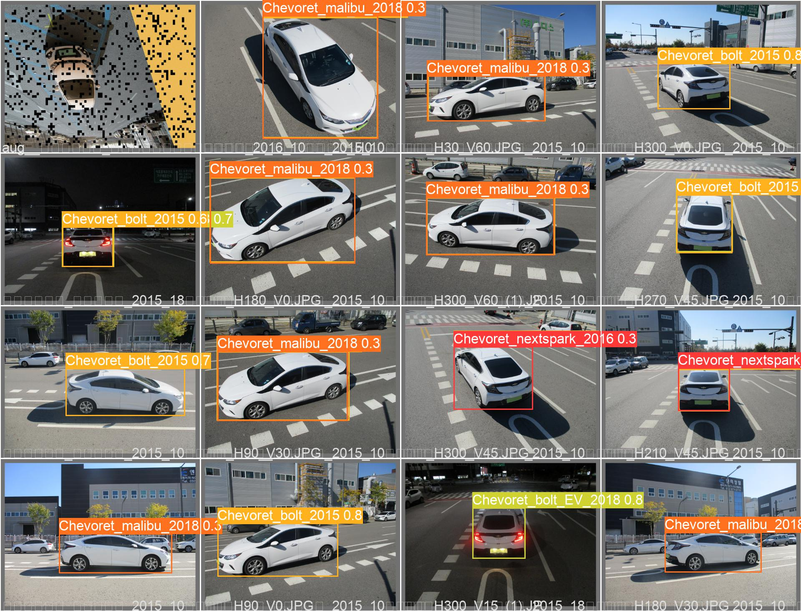
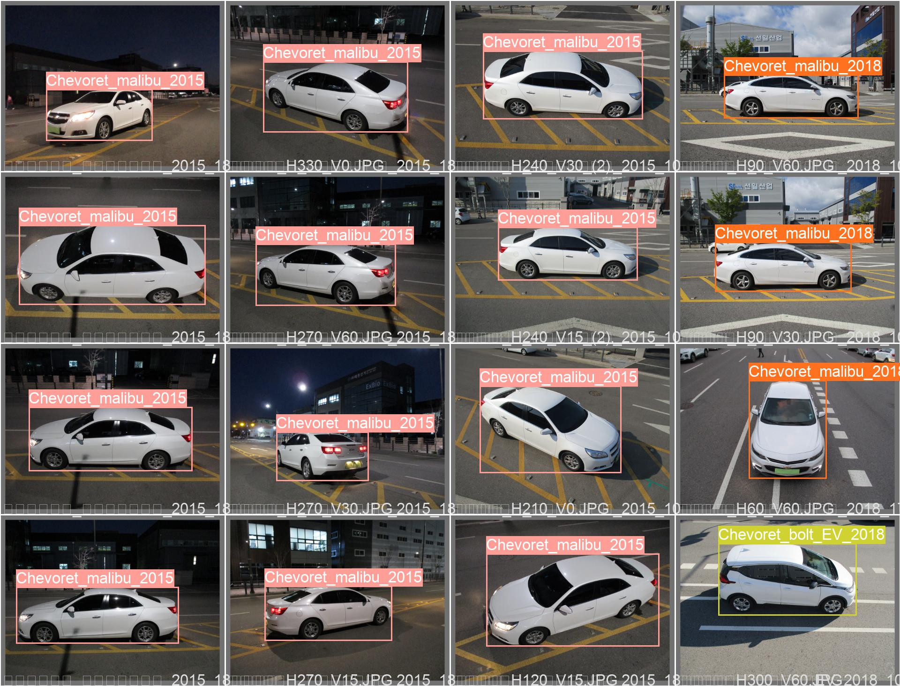
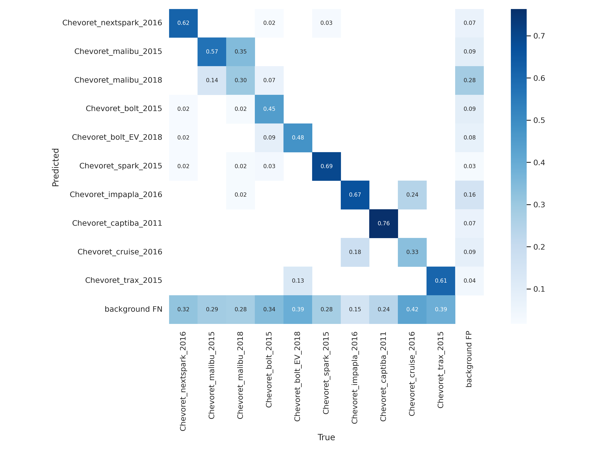
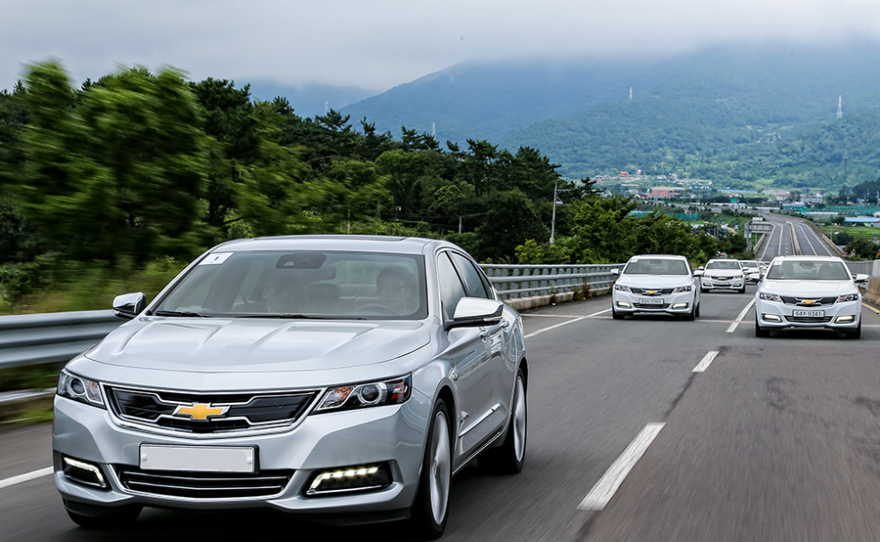
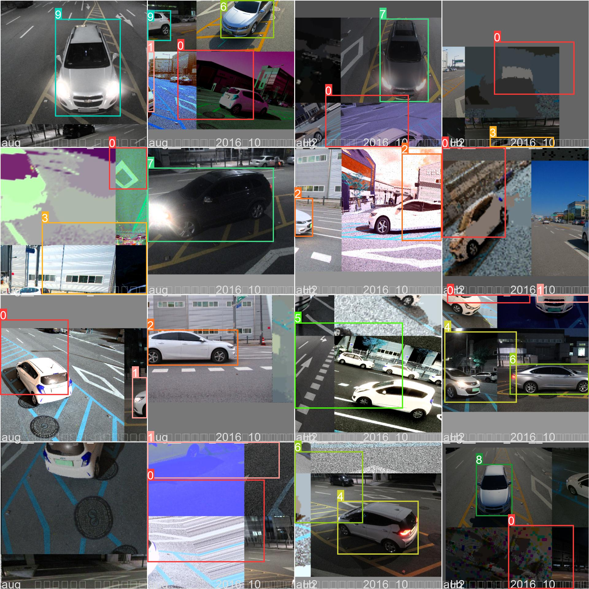
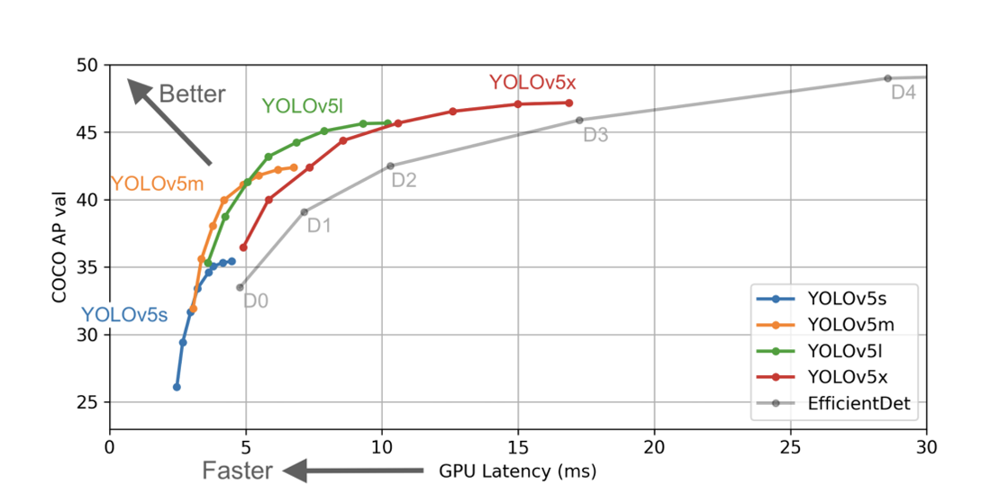
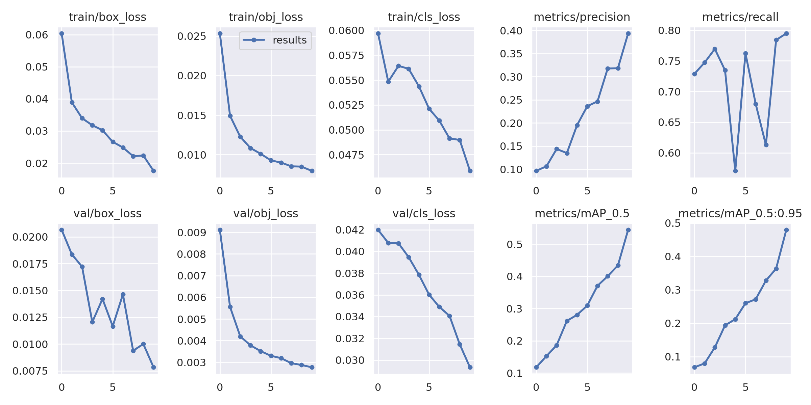
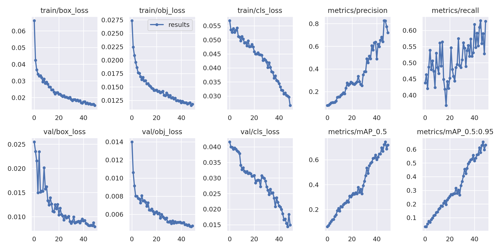

kCars Classification – AI 기반 국산 차량 연식·차종 인식

OVERVIEW
본 프로젝트는 AI-HUB에서 제공하는 공공 데이터셋과 직접 수집한 크롤링 데이터를 결합하여, 빠르고 정확한 객체 인식 모델인 YOLOv5를 기반으로 총 74종의 국산 차량 연식 및 모델을 판별하는 딥러닝 분류기를 개발하였습니다.
다음과 같은 내용을 목표로 했습니다.
- 국산 차량 연식 기반 데이터셋 구축
- 객체 인식 기반 차량 분류 모델 설계
- 크롤링과 증강 전략을 통한 데이터셋 확장
- 최적 데이터셋과 모델 조합 탐색



개발 과정에 대한 자세한 내용은 아래에서 확인하세요
- 데이터 빌딩과정
- 모델 훈련
- 인사이트
Can AI distinguish cars the way humans do?
같은 차처럼 보이지만 실제로는 다른 모델인 차량들이 있습니다.
예를 들어 말리부 2015와 말리부 2018은 디자인 차이가 거의 없어 사람도 쉽게 구분하기 어렵습니다.
하지만 자율주행 시스템, 교통 분석, 보험 사고 분석, 스마트 시티 CCTV 등 실제 산업에서는 이러한 차이를 정확히 인식해야 합니다. 또 이 기술이 발전하면 더 많은 차량을 구분하거나 작은 차이로도 차량 구분이 가능해지는 수준 까지 이어질 수 있다고 생각했습니다.

blog.gm-korea.co.kr데이터 빌딩 과정
처음에는 AI-Hub 차량 데이터셋을 사용했습니다. 하지만 데이터를 살펴보면서 한 가지 분명한 문제를 발견했습니다. 이미지 수 자체는 충분했지만, 촬영 장소가 비슷하고 차량 색상이 제한적이며 환경 다양성이 부족했습니다.
이 상태로 학습하면 AI는 차량의 형태적 특징보다 촬영 환경을 먼저 학습할 가능성이 있습니다. 특히 연식 차이가 작은 차량을 구분해야 하는 문제에서는 이러한 편향이 치명적이었기 때문에, 저는 데이터를 직접 다시 확장하기로 했습니다.
1. 한계 극복을 위한 데이터 수집
AI-Hub의 K-Cars 데이터셋은 화질, 조명, 구도별 데이터는 제공했지만 동일한 색상과 장소에 편향되어 있었습니다. 이를 보완하기 위해 Python, Selenium, AutoCrawler, 다중 프로세싱을 활용해 구글과 네이버에서 차량 이미지를 추가 수집했습니다.
일반적인 썸네일 수집이 아니라 검색 결과 → 이미지 클릭 → 원본 URL 추출 → 다운로드 방식으로 고화질과 저화질 이미지를 함께 확보했고, 이를 통해 더 다양한 실사용 환경 데이터를 모을 수 있었습니다.
| Dataset | Images |
|---|---|
| AI-HUB Dataset | 14,000 |
| Web Crawling Dataset | 21,000 |
| 총합 | 35,000 |
결과적으로 14,000장에서 35,000장까지 데이터셋을 확장했고, 74개의 국산 차량 연식 및 모델을 구분할 수 있는 커스텀 학습 기반을 만들었습니다.

2. 실험 기반 데이터 증강 최적화
모델이 차량의 구도 변화와 다양한 색상에 유연하게 대응하도록 여러 증강 기법을 단계별로 테스트했습니다. 실험 과정에서 알게 된 점은, 단순히 강한 증강을 넣는다고 성능이 좋아지지는 않는다는 것이었습니다.
형태를 과도하게 뒤트는 Heavy Augmentation은 오히려 피사체의 식별력을 떨어뜨려 정확도를 낮췄습니다. 그래서 최종적으로는 기본적인 Affine 변환(Crop, Scale)에 더해, 차량의 다양한 색상 조건을 반영할 수 있는 HSV 색상 채널 변환과 Brightness 조절에 집중했습니다.
또한 변형이 심한 파라미터에는 랜덤성을 부여해 이질감을 줄였고, 결과적으로 차량 외형을 무너뜨리지 않으면서도 환경 다양성을 확보하는 쪽으로 증강 전략을 정교화했습니다.
훈련 및 평가
처음 모델을 학습했을 때 성능은 기대보다 낮았습니다. 그래서 저는 모델 구조를 무작정 키우는 대신, 데이터 구성 자체를 다시 실험하기 시작했습니다. 특히 데이터 증강 방식에 따라 성능이 크게 달라진다는 점을 확인했습니다.
강한 증강을 적용했을 때는 차량 형태가 지나치게 변형되어 오히려 성능이 떨어졌습니다. 반대로 색상 변화, 밝기 변화, 구도 변화처럼 현실적인 변형을 적용했을 때 성능이 크게 향상되었습니다. 이 과정에서 단순히 더 큰 모델을 사용하는 것보다 데이터 품질과 증강 전략이 성능에 더 큰 영향을 준다는 점을 확인할 수 있었습니다.
1. 모델 선정 및 학습
객체 인식 모델로는 R-CNN 대비 연산 속도가 빠르고 실시간 검출에 유리한 One-stage 방식의 YOLO를 채택했습니다.
세부 모델 중 가장 가벼운 YOLOv5s로 먼저 하이퍼파라미터와 데이터셋 구성을 빠르게 테스트한 뒤, 최종적으로 정확도가 가장 높았던 YOLOv5x에 학습시켜 성능을 극대화했습니다.
결과적으로 모델 크기보다 어떤 데이터로, 어떤 방식으로 학습시키는가가 훨씬 더 중요하다는 점을 실험적으로 검증할 수 있었습니다.

2. 주요 성능 지표 분석
데이터 구성과 증강 전략을 반복적으로 개선하면서 모델 성능은 크게 향상되었습니다. 초기 정확도 60.91%에서 시작해, 커스텀 크롤링 데이터와 최적화된 증강(V3)을 적용한 뒤 최종 정확도 93.88%까지 도달했습니다.
훈련이 진행될수록 Box Loss와 Object Loss는 안정적으로 수렴했고, mAP 지표도 꾸준히 우상향하는 양상을 보였습니다. 이는 데이터 품질 개선이 실제 학습 안정성과 성능 향상으로 이어졌다는 것을 보여줍니다.
또한 Confusion Matrix를 통해 클래스별 정밀도를 확인한 결과, 형태 차이가 뚜렷한 차종은 높은 정밀도를 보였지만, 말리부 2015와 2018처럼 연식 차이만 있는 유사 모델 사이에서는 일부 혼동이 발생했습니다. 이를 통해 모델의 한계와 함께 향후 개선 방향도 도출할 수 있었습니다.
| 항목 | 수치 |
|---|---|
| 초기 정확도 | 60.91% |
| 최종 정확도 | 93.88% |
| 향상 폭 | 약 33% |


인사이트 및 결론
처음에는 신기술 AI에 대한 호기심으로 프로젝트를 시작했습니다. 예상보다 놀라운 결과를 얻었고, 이를 통해 미래 AI 산업에 대한 인사이트를 얻었습니다.
딥러닝에 대해 처음 접했음에도 불구하고, 본 프로젝트를 통해 딥러닝 모델과 인공지능 동작구조에 대해 탐구하며 깊은 이해를 얻었습니다. 저는 좋은 모델을 구축하기 위해서는 단순히 크기가 큰 데이터셋을 사용하는 것보다 '목적에 부합하는 고품질 데이터의 구축'이 성능에 미치는 영향이 크다는것을 증명했습니다. 데이터 편향성을 스스로 인지하고 이를 크롤링과 맞춤형 증강 기법으로 해결하는 과정을 과정을 겪었기 때문에 결과물이 더욱 만족스럽습니다.